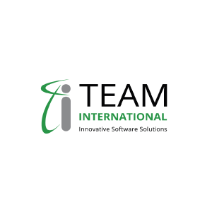
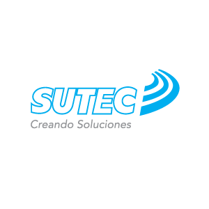
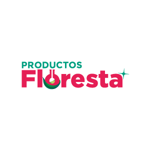
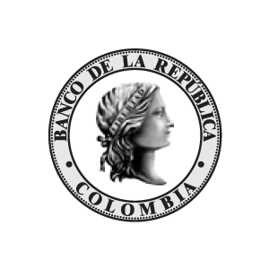
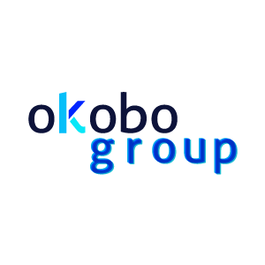

Hi, I'm Diana & I'm a designer
During my academic and work experience, I have been looking for creating concepts with Design Thinking approaches and an anchor point -"The user"-. I am getting involved in the development of different digital products for web and apps, where are now my interest in going deeper. I am also interested in The Design Thinking process, user experience research, strategy and design systems. Currently, I'm working on HTML and CSS basic skills and I'm really into software engineer and finally be complete with my knowledge of design.
skills
Concept developer | Graphic design | Communication design | Design Thinking | Web design | UX / UI Interface | Editorial design | Leadership / Team work
90% |
80% |
60% |
50% |
|---|---|---|---|
|
Ai Ps Id |
Sketch | After Effects | HTML/CSS |
education
Bachelor DegreeBogotá, Cundinamarca |
High School DegreeBogotá, Cundinamarca |
|---|---|
DesignUniversidad de los Andes January 2005 - October 2010 |
General baccalaureateSagrado corazón de Jesús Bethlemitas January 1993 - November 2004 |
Spanish - Native | English - Intermediate Advanced 6.5 IELTS Test / B2 - July 2017
work experience
I'm passionate about digital projects however my experience until now has been focused mainly on editorial design, branding and motion graphics. This type of projects gave me some bases to know how to design information and how to use a grid as an example, that is very useful when you are going to do a digital project too. So, check out my work and contact me on twitter.
Scroll down
:)
|  |
Section "Industries".The design before was 6 squares without a gap between them, It makes very difficult differentiate each industry. So I proposed to change it and make every square box extends for the entire page with a representative photo and title. Additionally, the visual information in each landing page of every industry was re-designed to be more user-friendly. RoleWeb Designer |
How to use blue parking zonesGraphic design and motion graphics to explain through a video how is the correct way to use blue parking zones in Manizales and to create awareness in the citizens, besides that to introduce them the new technologies that SUTEC is going to take place in manizales for the parking service. RoleGraphic Designer |
 |

|
Museum exhibition bookEditorial design of the book "Intimate voices. Stories and images of female artists" exhibition at National Museum in 2016 - 2017 RoleEditorial Designer |
Café Linaje ColombianoBrand identity creation, concept, naming, brand research, visual identity of the coffee company. “Linaje Colombiano” wants to communicate heritage, tradition and the roots within their production throughout the generations. That is why its name Linaje (lineage)and its communication. RoleArt Direction - Graphic Designer |

|
|  |
Productos FlorestaRebranding, concept development, UX/UI Interface design, web design. Case of study of Cleaning and Manteinance products factory "Productos Floresta". This project wants comunicate to users an environmental friendly brand also given them an interface where they can review the products and request a quote.From printable to digital products portfolio RoleUX/UI - Web Designer |
Banco de la RepúblicaEditorial design of the catalogue of " Hernán Díaz. Revelado retratos, sesiones y hojas de contacto" exhibition at Banco de la República Luis Angel Arango Library in 2015-2016. (AZ Studio Ana Vélez - Art Direction). RoleEditorial Designer |
 |
|  |
Okobo GroupRebranding, concept development. Case of study: external trade company that wants to communicate users three multiple solutions that they can offer in external trade where Okobo is the right choice for doing it. RoleArt Direction - Graphic Designer |
Entre OjosThe opportunity to run our own design studio was a really challenging experience. We were a team of three designers where each one contributed from their own strengths. This synergy allows us to get bigger projects with important firms in Colombia. RoleDesigner |

|
|
|
Banco de la RepúblicaInfographic for the 90 years of Banco de la República where we could explain in a public exhibition at Luis Angel Arango Library all The Banco de la República processes, which includes the manufacturing process of coins and bills besides the process to borrow a book from the Library collection RoleDesigner |
hobbies
In my spare time, I really enjoy watching videos about cooking and I find so fun trying new recipes to share with my family and friends. Actually, sometimes I make ravioli to sell to my friends and acknowledges.